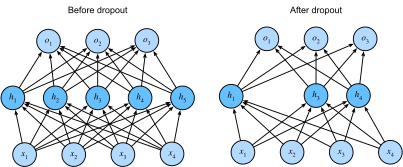

%load_ext d2lbook.tab
tab.interact_select(['mxnet', 'pytorch', 'tensorflow', 'jax'])Dropout
:label:sec_dropout
Réfléchissons brièvement à ce que nous attendons d’un bon modèle
prédictif. Nous voulons qu’il soit performant sur des données inédites.
La théorie classique de la généralisation suggère que pour réduire
l’écart entre les performances d’entraînement et de test, nous devrions
viser un modèle simple. La simplicité peut prendre la forme d’un petit
nombre de dimensions. Nous avons exploré cela lors de la discussion sur
les fonctions de base monomiales des modèles linéaires dans la
:numref:sec_generalization_basics. De plus, comme nous
l’avons vu lors de la discussion sur la décomposition des poids
(régularisation \(\ell_2\)) dans la
:numref:sec_weight_decay, la norme (inverse) des paramètres
représente également une mesure utile de la simplicité. Une autre notion
utile de la simplicité est le lissage, c’est-à-dire que la fonction ne
doit pas être sensible à de petits changements de ses entrées. Par
exemple, lorsque nous classons des images, nous nous attendons à ce que
l’ajout d’un peu de bruit aléatoire aux pixels soit globalement
inoffensif.
:citet:Bishop.1995 a formalisé cette idée en prouvant
que l’entraînement avec du bruit d’entrée est équivalent à la
régularisation de Tikhonov. Ce travail a établi un lien mathématique
clair entre l’exigence qu’une fonction soit lisse (et donc simple), et
l’exigence qu’elle soit résiliente aux perturbations de l’entrée.
Ensuite, :citet:Srivastava.Hinton.Krizhevsky.ea.2014 ont
développé une idée ingénieuse sur la façon d’appliquer l’idée de Bishop
aux couches internes d’un réseau également. Leur idée, appelée
dropout, consiste à injecter du bruit lors du calcul de chaque
couche interne pendant la propagation avant, et elle est devenue une
technique standard pour l’entraînement des réseaux de neurones. La
méthode est appelée dropout car nous “abandonnons”
littéralement certains neurones pendant l’entraînement. Tout au long de
l’entraînement, à chaque itération, le dropout standard consiste à
mettre à zéro une certaine fraction des nœuds de chaque couche avant de
calculer la couche suivante.
Pour être clair, nous imposons notre propre récit avec le lien vers Bishop. L’article original sur le dropout propose une intuition à travers une analogie surprenante avec la reproduction sexuée. Les auteurs soutiennent que le surapprentissage des réseaux de neurones se caractérise par un état dans lequel chaque couche repose sur un motif spécifique d’activations dans la couche précédente, appelant cette condition co-adaptation. Le dropout, affirment-ils, brise la co-adaptation tout comme on soutient que la reproduction sexuée brise les gènes co-adaptés. Bien qu’une telle justification de cette théorie soit certainement sujette à débat, la technique du dropout elle-même s’est avérée durable, et diverses formes de dropout sont implémentées dans la plupart des bibliothèques de deep learning.
Le défi majeur est de savoir comment injecter ce bruit. Une idée est de l’injecter de manière non biaisée afin que la valeur attendue de chaque couche — tout en fixant les autres — soit égale à la valeur qu’elle aurait prise en l’absence de bruit. Dans les travaux de Bishop, il a ajouté un bruit gaussien aux entrées d’un modèle linéaire. À chaque itération d’entraînement, il ajoutait un bruit échantillonné à partir d’une distribution de moyenne nulle \(\epsilon \sim \mathcal{N}(0,\sigma^2)\) à l’entrée \(\mathbf{x}\), produisant un point perturbé \(\mathbf{x}' = \mathbf{x} + \epsilon\). En espérance, \(E[\mathbf{x}'] = \mathbf{x}\).
Dans la régularisation par dropout standard, on met à zéro une certaine fraction des nœuds de chaque couche puis on débiaise chaque couche en normalisant par la fraction de nœuds qui ont été conservés (non abandonnés). En d’autres termes, avec une probabilité de dropout \(p\), chaque activation intermédiaire \(h\) est remplacée par une variable aléatoire \(h'\) comme suit :
\[ \begin{aligned} h' = \begin{cases} 0 & \textrm{ avec une probabilité } p \\ \frac{h}{1-p} & \textrm{ sinon} \end{cases} \end{aligned} \]
Par construction, l’espérance reste inchangée, c’est-à-dire \(E[h'] = h\).
%%tab mxnet
from d2l import mxnet as d2l
from mxnet import autograd, gluon, init, np, npx
from mxnet.gluon import nn
npx.set_np()%%tab pytorch
from d2l import torch as d2l
import torch
from torch import nn%%tab tensorflow
from d2l import tensorflow as d2l
import tensorflow as tf%%tab jax
from d2l import jax as d2l
from flax import linen as nn
from functools import partial
import jax
from jax import numpy as jnp
import optaxDropout en pratique
Rappelez-vous le MLP avec une couche cachée et cinq unités cachées de
la :numref:fig_mlp. Lorsque nous appliquons le dropout à
une couche cachée, en mettant à zéro chaque unité cachée avec une
probabilité \(p\), le résultat peut
être vu comme un réseau contenant seulement un sous-ensemble des
neurones d’origine. Dans la :numref:fig_dropout2, \(h_2\) et \(h_5\) sont supprimés. Par conséquent, le
calcul des sorties ne dépend plus de \(h_2\) ou \(h_5\) et leur gradient respectif s’annule
également lors de la rétropropagation. De cette façon, le calcul de la
couche de sortie ne peut pas être trop dépendant d’un seul élément de
\(h_1, \ldots, h_5\).

:label:fig_dropout2
Généralement, nous désactivons le dropout au moment du test. Étant donné un modèle entraîné et un nouvel exemple, nous n’abandonnons aucun nœud et n’avons donc pas besoin de normaliser. Cependant, il existe quelques exceptions : certains chercheurs utilisent le dropout au moment du test comme heuristique pour estimer l’incertitude des prédictions des réseaux de neurones : si les prédictions concordent sur de nombreuses sorties de dropout différentes, alors nous pourrions dire que le réseau est plus confiant.
Implémentation à partir de zéro
Pour implémenter la fonction dropout pour une seule couche, nous devons tirer autant d’échantillons d’une variable aléatoire de Bernoulli (binaire) que notre couche a de dimensions, où la variable aléatoire prend la valeur \(1\) (conserver) avec une probabilité \(1-p\) et \(0\) (abandonner) avec une probabilité \(p\). Une façon simple d’implémenter cela est de tirer d’abord des échantillons d’une distribution uniforme \(U[0, 1]\). Ensuite, nous pouvons conserver les nœuds pour lesquels l’échantillon correspondant est supérieur à \(p\), en abandonnant le reste.
Dans le code suivant, nous (implémentons une fonction
dropout_layer qui abandonne les éléments de l’entrée
tensorielle X avec une probabilité
dropout), en remettant à l’échelle le reste comme
décrit ci-dessus : en divisant les survivants par
1.0-dropout.
%%tab mxnet
def dropout_layer(X, dropout):
assert 0 <= dropout <= 1
if dropout == 1: return np.zeros_like(X)
mask = np.random.uniform(0, 1, X.shape) > dropout
return mask.astype(np.float32) * X / (1.0 - dropout)%%tab pytorch
def dropout_layer(X, dropout):
assert 0 <= dropout <= 1
if dropout == 1: return torch.zeros_like(X)
mask = (torch.rand(X.shape) > dropout).float()
return mask * X / (1.0 - dropout)%%tab tensorflow
def dropout_layer(X, dropout):
assert 0 <= dropout <= 1
if dropout == 1: return tf.zeros_like(X)
mask = tf.random.uniform(
shape=tf.shape(X), minval=0, maxval=1) < 1 - dropout
return tf.cast(mask, dtype=tf.float32) * X / (1.0 - dropout)%%tab jax
def dropout_layer(X, dropout, key=d2l.get_key()):
assert 0 <= dropout <= 1
if dropout == 1: return jnp.zeros_like(X)
mask = jax.random.uniform(key, X.shape) > dropout
return jnp.asarray(mask, dtype=jnp.float32) * X / (1.0 - dropout)Nous pouvons [tester la fonction dropout_layer
sur quelques exemples]. Dans les lignes de code suivantes, nous
passons notre entrée X à travers l’opération de dropout,
avec des probabilités 0, 0,5 et 1, respectivement.
%%tab all
if tab.selected('mxnet'):
X = np.arange(16).reshape(2, 8)
if tab.selected('pytorch'):
X = torch.arange(16, dtype = torch.float32).reshape((2, 8))
if tab.selected('tensorflow'):
X = tf.reshape(tf.range(16, dtype=tf.float32), (2, 8))
if tab.selected('jax'):
X = jnp.arange(16, dtype=jnp.float32).reshape(2, 8)
print('dropout_p = 0:', dropout_layer(X, 0))
print('dropout_p = 0.5:', dropout_layer(X, 0.5))
print('dropout_p = 1:', dropout_layer(X, 1))Définition du modèle
Le modèle ci-dessous applique le dropout à la sortie de chaque couche cachée (après la fonction d’activation). Nous pouvons définir des probabilités de dropout pour chaque couche séparément. Un choix courant consiste à définir une probabilité de dropout plus faible plus près de la couche d’entrée. Nous nous assurons que le dropout n’est actif que pendant l’entraînement.
%%tab mxnet
class DropoutMLPScratch(d2l.Classifier):
def __init__(self, num_outputs, num_hiddens_1, num_hiddens_2,
dropout_1, dropout_2, lr):
super().__init__()
self.save_hyperparameters()
self.lin1 = nn.Dense(num_hiddens_1, activation='relu')
self.lin2 = nn.Dense(num_hiddens_2, activation='relu')
self.lin3 = nn.Dense(num_outputs)
self.initialize()
def forward(self, X):
H1 = self.lin1(X)
if autograd.is_training():
H1 = dropout_layer(H1, self.dropout_1)
H2 = self.lin2(H1)
if autograd.is_training():
H2 = dropout_layer(H2, self.dropout_2)
return self.lin3(H2)%%tab pytorch
class DropoutMLPScratch(d2l.Classifier):
def __init__(self, num_outputs, num_hiddens_1, num_hiddens_2,
dropout_1, dropout_2, lr):
super().__init__()
self.save_hyperparameters()
self.lin1 = nn.LazyLinear(num_hiddens_1)
self.lin2 = nn.LazyLinear(num_hiddens_2)
self.lin3 = nn.LazyLinear(num_outputs)
self.relu = nn.ReLU()
def forward(self, X):
H1 = self.relu(self.lin1(X.reshape((X.shape[0], -1))))
if self.training:
H1 = dropout_layer(H1, self.dropout_1)
H2 = self.relu(self.lin2(H1))
if self.training:
H2 = dropout_layer(H2, self.dropout_2)
return self.lin3(H2)%%tab tensorflow
class DropoutMLPScratch(d2l.Classifier):
def __init__(self, num_outputs, num_hiddens_1, num_hiddens_2,
dropout_1, dropout_2, lr):
super().__init__()
self.save_hyperparameters()
self.lin1 = tf.keras.layers.Dense(num_hiddens_1, activation='relu')
self.lin2 = tf.keras.layers.Dense(num_hiddens_2, activation='relu')
self.lin3 = tf.keras.layers.Dense(num_outputs)
def forward(self, X):
H1 = self.lin1(tf.reshape(X, (X.shape[0], -1)))
if self.training:
H1 = dropout_layer(H1, self.dropout_1)
H2 = self.lin2(H1)
if self.training:
H2 = dropout_layer(H2, self.dropout_2)
return self.lin3(H2)%%tab jax
class DropoutMLPScratch(d2l.Classifier):
num_hiddens_1: int
num_hiddens_2: int
num_outputs: int
dropout_1: float
dropout_2: float
lr: float
training: bool = True
def setup(self):
self.lin1 = nn.Dense(self.num_hiddens_1)
self.lin2 = nn.Dense(self.num_hiddens_2)
self.lin3 = nn.Dense(self.num_outputs)
self.relu = nn.relu
def forward(self, X):
H1 = self.relu(self.lin1(X.reshape(X.shape[0], -1)))
if self.training:
H1 = dropout_layer(H1, self.dropout_1)
H2 = self.relu(self.lin2(H1))
if self.training:
H2 = dropout_layer(H2, self.dropout_2)
return self.lin3(H2)[Entraînement]
Ce qui suit est similaire à l’entraînement des MLP décrit précédemment.
%%tab all
hparams = {'num_outputs':10, 'num_hiddens_1':256, 'num_hiddens_2':256,
'dropout_1':0.5, 'dropout_2':0.5, 'lr':0.1}
model = DropoutMLPScratch(**hparams)
data = d2l.FashionMNIST(batch_size=256)
trainer = d2l.Trainer(max_epochs=10)
trainer.fit(model, data)[Implémentation concise]
Avec les API de haut niveau, tout ce que nous avons à faire est
d’ajouter une couche Dropout après chaque couche
entièrement connectée, en passant la probabilité de dropout comme seul
argument à son constructeur. Pendant l’entraînement, la couche
Dropout abandonnera aléatoirement des sorties de la couche
précédente (ou de manière équivalente, les entrées de la couche
suivante) selon la probabilité de dropout spécifiée. Lorsqu’elle n’est
pas en mode entraînement, la couche Dropout laisse
simplement passer les données pendant le test.
%%tab mxnet
class DropoutMLP(d2l.Classifier):
def __init__(self, num_outputs, num_hiddens_1, num_hiddens_2,
dropout_1, dropout_2, lr):
super().__init__()
self.save_hyperparameters()
self.net = nn.Sequential()
self.net.add(nn.Dense(num_hiddens_1, activation="relu"),
nn.Dropout(dropout_1),
nn.Dense(num_hiddens_2, activation="relu"),
nn.Dropout(dropout_2),
nn.Dense(num_outputs))
self.net.initialize()%%tab pytorch
class DropoutMLP(d2l.Classifier):
def __init__(self, num_outputs, num_hiddens_1, num_hiddens_2,
dropout_1, dropout_2, lr):
super().__init__()
self.save_hyperparameters()
self.net = nn.Sequential(
nn.Flatten(), nn.LazyLinear(num_hiddens_1), nn.ReLU(),
nn.Dropout(dropout_1), nn.LazyLinear(num_hiddens_2), nn.ReLU(),
nn.Dropout(dropout_2), nn.LazyLinear(num_outputs))%%tab tensorflow
class DropoutMLP(d2l.Classifier):
def __init__(self, num_outputs, num_hiddens_1, num_hiddens_2,
dropout_1, dropout_2, lr):
super().__init__()
self.save_hyperparameters()
self.net = tf.keras.models.Sequential([
tf.keras.layers.Flatten(),
tf.keras.layers.Dense(num_hiddens_1, activation=tf.nn.relu),
tf.keras.layers.Dropout(dropout_1),
tf.keras.layers.Dense(num_hiddens_2, activation=tf.nn.relu),
tf.keras.layers.Dropout(dropout_2),
tf.keras.layers.Dense(num_outputs)])%%tab jax
class DropoutMLP(d2l.Classifier):
num_hiddens_1: int
num_hiddens_2: int
num_outputs: int
dropout_1: float
dropout_2: float
lr: float
training: bool = True
@nn.compact
def __call__(self, X):
x = nn.relu(nn.Dense(self.num_hiddens_1)(X.reshape((X.shape[0], -1))))
x = nn.Dropout(self.dropout_1, deterministic=not self.training)(x)
x = nn.relu(nn.Dense(self.num_hiddens_2)(x))
x = nn.Dropout(self.dropout_2, deterministic=not self.training)(x)
return nn.Dense(self.num_outputs)(x):begin_tab:jax Notez que nous devons redéfinir la
fonction de perte car un réseau avec une couche de dropout nécessite une
PRNGKey lors de l’utilisation de Module.apply(), et cette
graine RNG doit être explicitement nommée dropout. Cette
clé est utilisée par la couche dropout de Flax pour générer
le masque de dropout aléatoire en interne. Il est important d’utiliser
une clé dropout_rng unique à chaque époque dans la boucle
d’entraînement, sinon le masque de dropout généré ne sera pas
stochastique et différent entre les exécutions d’époques. Ce
dropout_rng peut être stocké dans l’objet
TrainState (dans la classe d2l.Trainer définie
dans :numref:oo-design-training) en tant qu’attribut et à
chaque époque il est remplacé par un nouveau dropout_rng.
Nous avons déjà géré cela avec la méthode fit_epoch définie
dans :numref:sec_linear_scratch. :end_tab:
%%tab jax
@d2l.add_to_class(d2l.Classifier) #@save
@partial(jax.jit, static_argnums=(0, 5))
def loss(self, params, X, Y, state, averaged=True):
Y_hat = state.apply_fn({'params': params}, *X,
mutable=False, # To be used later (e.g., batch norm)
rngs={'dropout': state.dropout_rng})
Y_hat = d2l.reshape(Y_hat, (-1, Y_hat.shape[-1]))
Y = d2l.reshape(Y, (-1,))
fn = optax.softmax_cross_entropy_with_integer_labels
# The returned empty dictionary is a placeholder for auxiliary data,
# which will be used later (e.g., for batch norm)
return (fn(Y_hat, Y).mean(), {}) if averaged else (fn(Y_hat, Y), {})Ensuite, nous [entraînons le modèle].
%%tab all
model = DropoutMLP(**hparams)
trainer.fit(model, data)Résumé
Au-delà du contrôle du nombre de dimensions et de la taille du vecteur de poids, le dropout est un autre outil pour éviter le surapprentissage. Souvent, les outils sont utilisés conjointement. Notez que le dropout est utilisé uniquement pendant l’entraînement : il remplace une activation \(h\) par une variable aléatoire d’espérance \(h\).
Exercices
- Que se passe-t-il si vous modifiez les probabilités de dropout pour les première et deuxième couches ? En particulier, que se passe-t-il si vous permutez celles des deux couches ? Concevez une expérience pour répondre à ces questions, décrivez vos résultats de manière quantitative et résumez les conclusions qualitatives.
- Augmentez le nombre d’époques et comparez les résultats obtenus en utilisant le dropout avec ceux obtenus sans l’utiliser.
- Quelle est la variance des activations dans chaque couche cachée lorsque le dropout est appliqué et lorsqu’il ne l’est pas ? Tracez un graphique pour montrer comment cette quantité évolue au fil du temps pour les deux modèles.
- Pourquoi le dropout n’est-il généralement pas utilisé au moment du test ?
- En utilisant le modèle de cette section comme exemple, comparez les effets de l’utilisation du dropout et de la décomposition des poids. Que se passe-t-il lorsque le dropout et la décomposition des poids sont utilisés en même temps ? Les résultats sont-ils additifs ? Y a-t-il des rendements décroissants (ou pire) ? S’annulent-ils mutuellement ?
- Que se passe-t-il si nous appliquons le dropout aux poids individuels de la matrice de poids plutôt qu’aux activations ?
- Inventez une autre technique pour injecter du bruit aléatoire à chaque couche qui soit différente de la technique standard du dropout. Pouvez-vous développer une méthode qui surpasse le dropout sur le jeu de données Fashion-MNIST (pour une architecture fixe) ?
:begin_tab:mxnet Discussions :end_tab:
:begin_tab:pytorch Discussions :end_tab:
:begin_tab:tensorflow Discussions :end_tab:
:begin_tab:jax Discussions :end_tab: